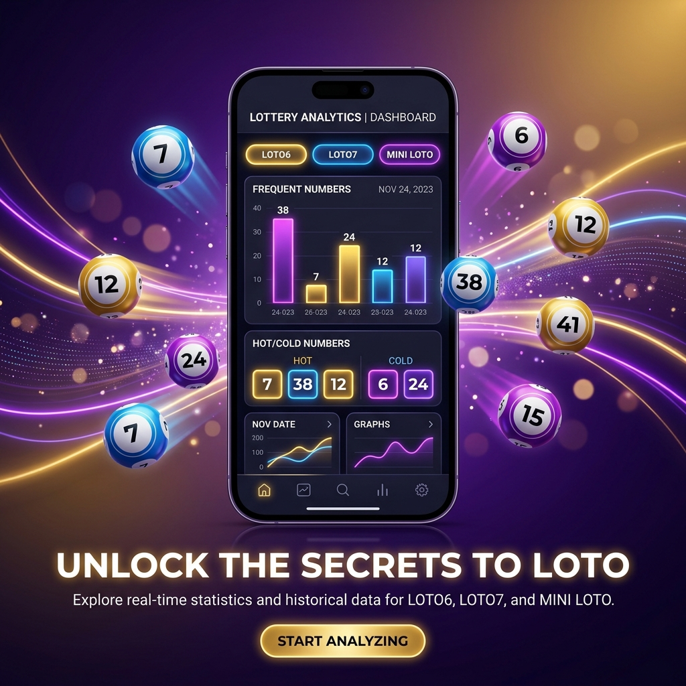

過去データとAIで賢く予測し、面倒な収支計算もすべて自動化。出にくい数字を避ける「Not番号」機能で無駄のない購入をサポートします。

ロトを購入する多くの人が抱える、数字選びや管理の煩わしさを解決します。
何を基準に数字を選べばいいかわからず、結局いつも同じ数字や単純な組み合わせを選んでしまいがちです。
自分がこれまでにどれだけ購入し、いくら当選したのか、通算での収支が不透明になりがちです。
スマホが突然故障したり、iPhoneからAndroidへの機種変更時に、これまでの履歴や設定が消えてしまわないか不安です。
あなたのロト予測と管理を極限までシンプルにする4つのテクノロジー。
サーバー側で蓄積された過去の膨大な当選実績データを解析し、次回に選出される確率が最適化された組み合わせを瞬時に算出します。
AI予測ボタンを押すだけで、バランスの良い組み合わせを自動生成します。
「この数字は出なさそう」「相性が悪い」と思う番号を除外登録できます。除外された番号は、手動選択画面でタップできなくなり、ランダム予測（Nランダム）時にも絶対に選ばれません。
除外設定された番号（薄いピンク）を自動的に避けて予測を組み立てます。
購入登録した口数と、取得した最新の当選結果データをもとに、投資額・回収額およびトータルの収支状況（BOP）を自動で計算します。手動で当選金を調べる面倒な作業は一切不要です。
ロトごとの収支の推移やトータルの損益状況が一目瞭然になります。
Googleアカウントと連携し、アプリ内の予測履歴、設定、収支データをGoogle Driveに安全に保存します。異なるOS間（iOS ⇄ Android）でのデータ移行にも完全対応しています。
機種変更でもデータを即座に復元し、これまでの記録をすべて引き継げます。
たった3つのステップで、あなたのロト分析・管理環境が整います。
アプリ起動後、右上にある「更新」ボタンをタップ。数秒から1分程度で、最新の当選データと過去の実績が全て取得されます。
AI予測ボタンをタップして推奨の組み合わせを出したり、不要な番号をNot番号に設定して自分好みの予測を出力し、予想として登録します。
当選結果の発表後に再度「更新」ボタンをタップするだけで、登録していた予想の当選チェックと収支計算が自動的に完了します。
LOTON（ロトン）に関してよくいただくご質問とその回答です。
はい、すべての基本機能を無料でご利用いただけます。最新の当選結果取得、AI予測、Not番号指定、収支管理、Google Driveバックアップなど、広告視聴などを通じてフルにご活用いただけます。
はい、可能です。LOTONのバックアップ機能はGoogle Drive（Googleアカウント）を使用しているため、iPhoneからAndroid、またはその逆へのデータ復元も問題なく行えます。
LOTONでは最新データの取得時に通信が発生するため、ユーザー様のご都合の良いタイミングやWi-Fi環境等でデータを更新していただくために、あえて手動更新ボタンによる更新方式を採用しています。
AI予測は、過去の当選実績データを統計学的に処理し、偏りに基づいた組み合わせを作成するサポートツールです。将来の絶対的な当選を保証するものではありませんが、手動での当てずっぽうな選択や重複購入を防ぐスマートな手段としてご活用ください。
LOTONを無料でダウンロードして、AI予測、Not番号機能、自動収支管理の便利さを体験してください。